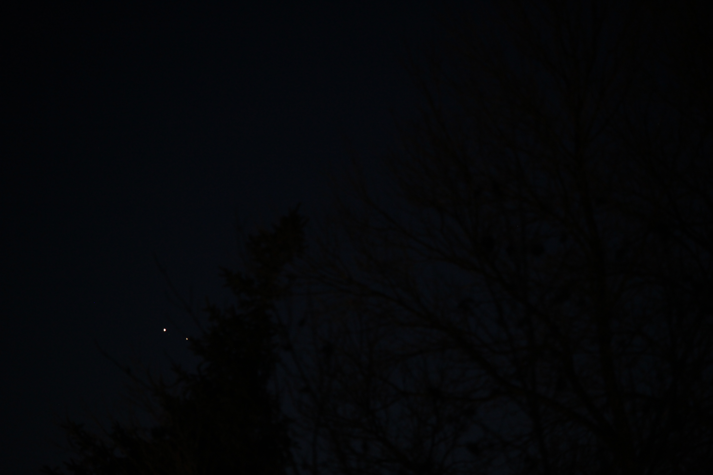

Welcome!

Haleakalā Observatory
Camera Setup: Canon EOS Rebel SL1 and a Tokina 11m ultra-wide lens


Camera Setup: Canon EOS Rebel SL1 and a Tokina 11m ultra-wide lens
I am a Computer Science Honours (Coop) graduate who is now working in the industry. Please enjoy my personal website, which showcases my photography.
Above are a few of my photographs of the summit of Haleakalā volcano, taken using a Canon EOS Rebel SL1 and a Tokina 11m ultra-wide lens.
The first night sky photograph was produced using a layered exposure with the Canon EOS Rebel SL1 and Tokina 11m ultra-wide lens.
The photograph of Jupiter was taken using a zoom lens, with a focal length of 32mm, f-stop f/4, ISO-6400 and exposure time of 1/400 seconds. Image was captured through an 8 inch celestron SCT.
This tool allows users to track the frequency that terms appear in the English language from 1500 to present. A guide to using the tool can be found here.
See when the International Space Station is over top of your city.
A great place to read articles about technology and other topics.
A digital library of all known knowledge.
A grassroots organization that promotes space exploration. It aims to launch in 2019 the first controlled solar sail.
An old-fashioned internet directory that is curated by real humans.